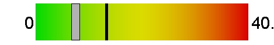
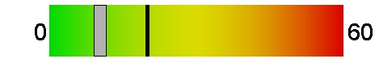
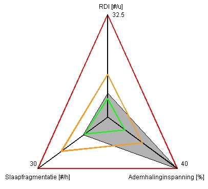

|
|
|
|
|
|
|
|
|
|
|
|
|
|
|
|
Patiënt |
|
| Naam: |
|
Geslacht: |
|
Gewicht [kg]: |
0 |
Geboren op [dd/mm/jj]: |
|
| Voornaam: |
|
BMI: |
|
Lengte [cm]: |
0 |
Datum registratie [dd/mm/jj]: |
16/02/19 |
|
Registratie |
|
| Registratieduur [uu:mm:ss]: |
19:23:33 |
Validiteit Jawac signaal [%]: |
99 |
| Totale analysetijd [uu:mm:ss]: |
04:53:27 |
|
|
|
Ernstindicatoren (Diagnose volwassene) |
|
Geschatte index voor ademhalingsstoornissen (RDI) [#/h]:
Drempel [#/u]: 13.5 |
7.6 |
 |
Geschatte index slaapfragmentatie [#/u]:
Drempel [#/u]: 20 |
10.4 |
 |
Ademhalingsinspanning
Drempel [%]: 20 |
02:04:48
(63.3%) |
_NL_52y_S1_PTEV.jpg) |
|
Jawac Analyse |
|
| Totale slaaptijd [uu:mm:ss]: |
03:17:00 |
|
 |
| RDI in rugligging [#/u]: |
21.6 |
|
| Gemiddelde onderkaakverlaging [mm] (mm) |
-5 |
|
| Gemiddelde onderkaak oscillaties [mm]: |
0.6 |
|
| Totaal aantal events: |
25 |
|
| Aantal obstructieve events (OE): |
24 |
7.3 /h |
| Aantal centrale events (CE): |
0 |
0 /h |
| Aantal mixed events (ME): |
1 |
0.3 /h |
|
ECG Analyse |
|
| Gemiddeld hartritme [bpm]: |
104.1 |
Totale RR Power [s²] |
0.4 |
| Gemiddeld RR-interval [s]: |
0.58 |
Percentage VLF energie [0.01-0.04]Hz [%]: |
10.8 |
| pNN50 [%]: |
46 |
Percentage LF energie [0.04-0.15]Hz [%]: |
23.7 |
| SD1 (t.o.v. de hoofdas) [ms]: |
0.98 |
Percentage HF energie [0.15-0.4]Hz [%]: |
65.5 |
| SD2 (t.o.v. de loodrechte as) [ms]: |
282.93 |
Ratio LF/HF: |
0.36 |
_NL_52y_ShotECG_1.jpg)